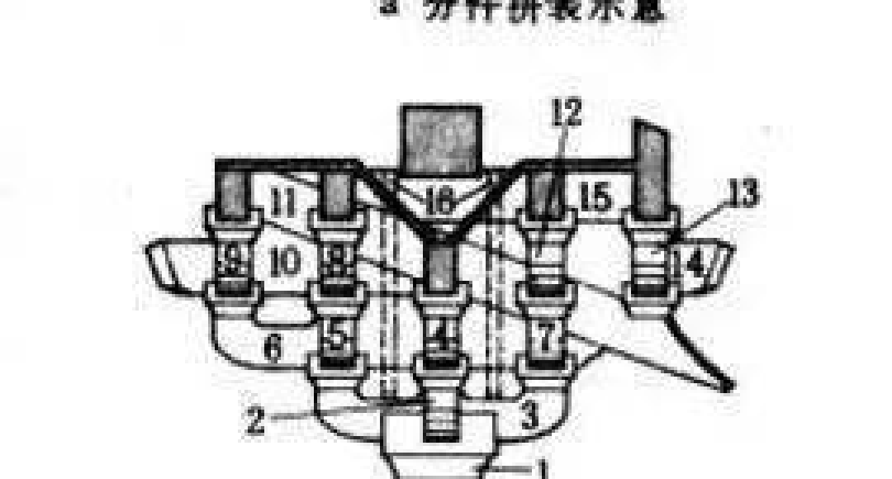
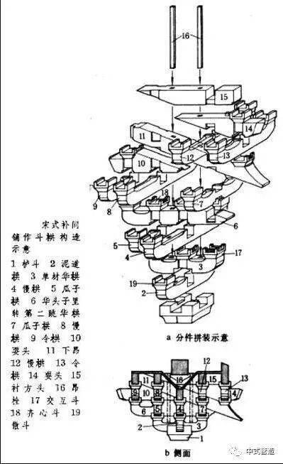

宋式补间铺作斗拱
《营造法式》梁思成材栔标准零间隙拼合
单杪单下昂五铺作 · 依据图样十一立面剖面与仰视平面严格推演 · 严密榫卯咬合与材栔净空
对比图: 梁思成图样十一·剖面立面
对比图: 营造法式图b·侧面图
对比图: 营造法式图十一·仰视平面
对比图: 梁思成图样十一·全版原图
对比图: 营造法式大木作分件详图
图层叠加：开启
顶层梁枋：显示
查看原书古建图谱
X 轴
面宽方向
(左右横向，所有横栱沿此轴展开)
Y 轴
高度方向
(栌斗底Y=0，下昂通过Y=3.5，昂尾Y=6.4)
Z 轴
进深方向
(-Z 室内里转，+Z 室外挑檐)
【法相反向问题已彻底修复】：
• 修复了由于轴交换（行列式为 -1）导致的顶点环绕反转。
• 轮廓统一采用逆时针（CCW）严格闭合。
• 采用正交旋转变换（行列式严格为 +1.0），法线全部朝外！构件呈现实体木质饱满凸起，光影反射正常！
榫卯拆解与重新组装
0%
完整组装态 (图b)
已咬合锁死
完全离散态 (图a)
一键顺序拆解
一键重新拼装
自动往复演示
正侧基准视角
观察与材质模式
老楠木色
构件分色
X-Ray 透视
图b半透明比对调节
透明
55%
清晰
构件索引 (原图 1~19 号)
点击高亮定位
11
下昂 (Xia Ang)
核心纵向悬臂构件 · Y-Z 垂直面 28° 斜杠杆
柱位与开间：
柱位 3 (正心)
轴向与模数：
中心原点总座基，开十字斗口
三维空间绝对位置：
昂身通贯 Z 从 -4.4 到 +5.9，高度 Y 从 6.4 下倾至 2.4！正中下腹部 Y=3.5 严密落座在【华头子 6】上，距最底下的栌斗足足有两层横栱的距离。
法相与光影特性：
所有三角形顶点严格按逆时针环绕，法线 100% 朝外放射，表面微倒角反光柔和自然，彻底杜绝内凹阴影错乱。
榫卯结合核心机制：
两根木质【昂栓 16】沿 Y 轴垂直自顶层衬方头打通昂身双孔，阻断下昂在巨大剪应力下的沿斜轴滑脱！
侧立面 (进深·图b基准)
3D 自由视角
正立面 (面宽)
平水俯视
下昂与华头子特写
×
构造示意 (yingzao.jpeg)
梁思成图样十一 (side-top.webp)
分件大图 (detailed.jpeg)

《营造法式》宋式补间铺作构造示意图：上 a 分件，下 b 侧面图